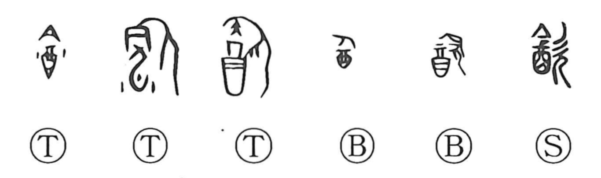

飲

Kun: nomu, nomi | On: in, on
to drink ・ to swallow
Explanation
In its oldest form the character was written as 歆, a compound that sets a covered wine vessel beside 欠, the figure of a person with mouth open. The vessel is the wine jar 酉 capped with 今 as its lid, and 欠 supplies the act of drinking. Together they picture drinking from a cask and thus give the meaning “to drink.” Later, a new graph 飲 was adopted that replaced the wine-jar element with 食, which originally depicted a lidded food container; although that component was not specific to liquids, this form came to be used for the sense “to drink” in place of 歆.